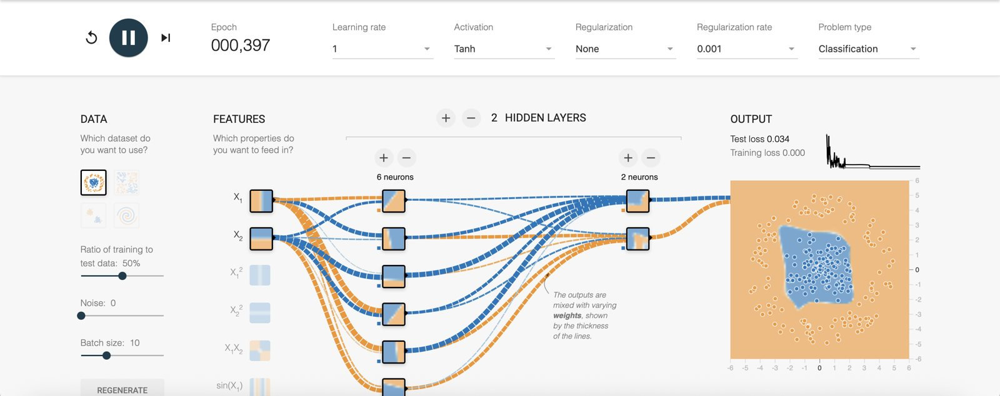
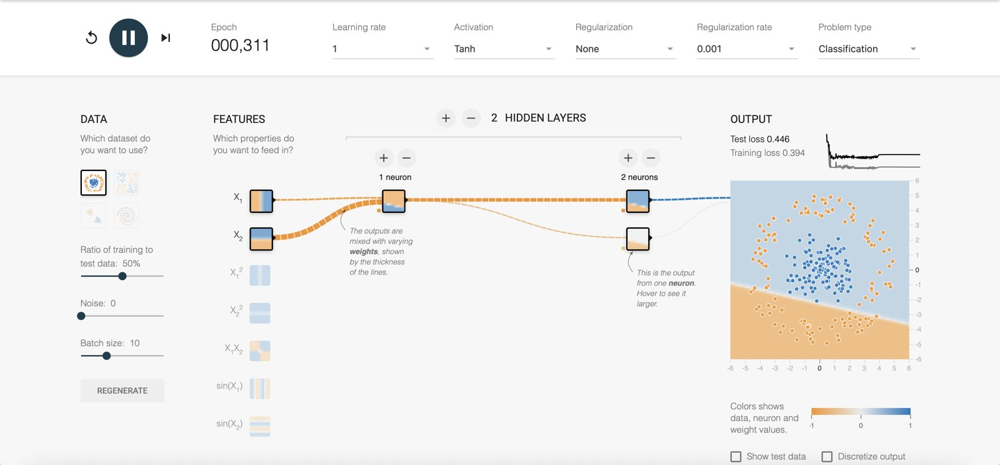
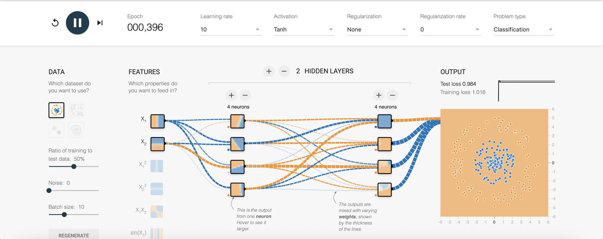

Inside a Neural Network
What the TensorFlow Neural Network Playground taught me about layers, neurons, weights, activation functions, loss functions and optimizers, and why seeing a network train makes each of them easier to understand.
Use the arrows at the top, the ↑ ↓ keys, or just scroll.
The Playground: one controlled experiment at a time
The Playground trains a small network in the browser on two-dimensional points that belong to one of two classes (Smilkov et al., 2017). I changed one control at a time and watched training time, model complexity and test loss.
Data type
Circle, exclusive-or (XOR), two Gaussian clusters, and the spiral. Each needs a different shape of decision boundary.
Noise & split
Noise from 0 to 50 blurs the class boundary. The train/test ratio decides how many points the model never sees.
Features
X₁, X₂ and engineered inputs: X₁², X₂², X₁X₂, sin(X₁), sin(X₂).
Architecture & training
Hidden layers (0–6), neurons per layer (1–8), activation, learning rate, regularization, batch size.

What the screen shows: line color and thickness on every connection are the weights, the small image in each neuron is what that neuron has learned, and the output panel plots test and training loss as epochs tick up.
How data flows through a network
Data moves forward from the input layer through the hidden layers to the output, where the prediction is scored by the loss function. The error then flows backward (backpropagation), and the optimizer adjusts every weight (Rumelhart et al., 1986). One forward pass plus one backward pass over a batch is one training step.
Layers
A layer is a group of neurons that all receive the same inputs and pass their outputs on together. Each layer transforms its input into a new representation for the next one (LeCun et al., 2015).
- Input layer holds the raw features. It does no computation; it hands the values to the network.
- Hidden layers learn intermediate features. Early layers find simple boundaries; later layers combine them into curves and regions.
- Output layer produces the prediction: here, one value whose sign picks the class.
- Depth (number of layers) adds composition. Width (neurons per layer) adds capacity at each step.
In the Playground: with zero hidden layers the network can only draw a straight line, so it fails on circle and XOR. Adding one hidden layer of four neurons let it bend the boundary.
Neurons
A neuron is the basic unit of computation. It multiplies each input by a weight, adds a bias, and passes the sum through an activation function (Goodfellow et al., 2016).
- A single neuron draws one boundary: a line in 2-D.
- Several neurons in a layer draw several lines; the next layer combines them into shapes.
- Too few neurons underfit. Too many can memorize noise.

In the Playground: every neuron's small preview square shows the boundary it has learned. In the first hidden layer each one is a single straight split, so the number of neurons there sets how many edges the final shape can have.
Weights and biases
A weight is a learnable number on each connection that says how strongly, and in which direction, one neuron's output affects the next. A bias shifts a neuron's threshold up or down (Google for Developers, n.d.).
- Sign: positive weights push toward one class, negative toward the other.
- Magnitude: a large weight makes that input matter a lot; a weight near zero effectively cuts the connection.
- Learning is weight adjustment. Everything the network "knows" is stored in these numbers.
- Regularization (L1, L2) penalizes large weights to keep the model simpler.
In the Playground: at epoch 0 every line is thin and random. After training, a few lines become thick and the rest fade. With L1 regularization, unused connections dropped close to zero.
Activation functions
An activation function turns a neuron's weighted sum into its output and adds non-linearity. Without it, any number of stacked layers collapses into a single linear model (Goodfellow et al., 2016).
In the Playground: ReLU reached a low loss in the fewest epochs and gave a slightly angular boundary. Tanh gave smoother curves. Sigmoid trained noticeably slower. Linear could not solve circle or spiral at any depth.
Loss functions
A loss function measures how wrong the predictions are as a single number. Training is the search for weights that make it small (Goodfellow et al., 2016).
- Mean squared error: average squared distance between prediction and target. Used for regression, and shown by the Playground.
- Cross-entropy: penalizes confident wrong answers heavily. The usual choice for classification.
- Training loss is measured on data the model learns from; test loss on data it has never seen. The gap between them shows overfitting.
In the Playground: on the spiral with noise at 40 and a large network, training loss kept falling while test loss leveled off and crept up. That gap was my clearest picture of overfitting.
Optimization algorithms
An optimizer decides how to change the weights after each batch. It follows the gradient of the loss downhill (Ruder, 2016).
- Gradient descent / SGD: step against the gradient; η is the learning rate. Mini-batches make each step cheap.
- Momentum keeps some of the previous step to roll through small bumps.
- Adam adapts the step size per weight. It is the common default in practice (Kingma & Ba, 2015).
- Learning rate matters most: too small is slow, too large overshoots.

In the Playground (which uses mini-batch gradient descent): at learning rate 1 (slide 2) the loss spiked early and then settled at a test loss of 0.034. At learning rate 10 the same kind of network never learned at all. The learning rate alone decided between a solved problem and a useless model.
What each change did
| Change | Training time | Model complexity | Performance |
|---|---|---|---|
| Gaussian → circle / XOR | fast once a hidden layer exists | 1 layer, 3–4 neurons enough | Near-perfect test loss with ReLU or tanh |
| Spiral, raw X₁, X₂ | slow often 1,000+ epochs | Needed 3+ layers of 6–8 neurons | Reached good loss but sometimes stalled; sensitive to learning rate |
| Add engineered features | much faster | Circle solved with X₁², X₂² and no hidden layer; XOR with X₁X₂ | Same accuracy with a far smaller network |
| Noise 0 → 40+ | Longer, loss stays higher | Large networks started fitting noise | Test loss rose and the train/test gap widened |
| Circle: 6 → 1 neuron in layer 1 (my runs) | stalled loss flat after ~100 epochs | Bottleneck: one line for the whole network | Test loss 0.446 vs. 0.034 with 6 neurons |
| Learning rate 1 → 10 (my runs) | diverged loss jumped to ~1.0 at once | Unchanged (2 layers of 4) | Test loss 0.984; every point labeled one class |
| More layers / neurons | More time per epoch | Higher capacity | Helped on spiral; on simple data, no gain and more overfitting |
| Lower training ratio (e.g. 30%) | Fast per epoch | Unchanged | Worse generalization, especially with noise |
The pattern: match the model to the problem. Good input features did more than extra layers, and extra capacity paid off only when the data was genuinely complex.
Why visualizing neural networks matters
It makes the abstract concrete
Weights, activations and loss are numbers on paper. Watching lines thicken and the boundary bend shows what each one actually does.
It speeds up debugging
A flat loss curve, a flickering boundary or a growing train/test gap each point to a specific fix: learning rate, capacity, or regularization.
It supports explanation
Stakeholders trust models they can see. A visual is the fastest way to explain why a model behaves the way it does.
Key insights from the exercise
- Features beat depth. One squared feature replaced an entire hidden layer on the circle dataset.
- Non-linearity is the point. Without an activation function, depth adds nothing.
- Learning rate is the first thing to tune. It decided whether training crawled, converged or diverged.
- Watch test loss, not training loss. Noise and oversized networks hide overfitting behind a falling training curve.
- Same habit as data engineering: change one variable, observe, and verify against data the system has not seen.
References
- Goodfellow, I., Bengio, Y., & Courville, A. (2016). Deep learning. MIT Press. https://www.deeplearningbook.org/
- Google for Developers. (n.d.). Neural networks [Machine Learning Crash Course]. Retrieved October 31, 2026, from https://developers.google.com/machine-learning/crash-course/neural-networks
- Kingma, D. P., & Ba, J. (2015). Adam: A method for stochastic optimization. In Proceedings of the 3rd International Conference on Learning Representations (ICLR). https://arxiv.org/abs/1412.6980
- LeCun, Y., Bengio, Y., & Hinton, G. (2015). Deep learning. Nature, 521(7553), 436–444. https://doi.org/10.1038/nature14539
- Nair, V., & Hinton, G. E. (2010). Rectified linear units improve restricted Boltzmann machines. In Proceedings of the 27th International Conference on Machine Learning (ICML) (pp. 807–814).
- Ruder, S. (2016). An overview of gradient descent optimization algorithms (arXiv:1609.04747). arXiv. https://arxiv.org/abs/1609.04747
- Rumelhart, D. E., Hinton, G. E., & Williams, R. J. (1986). Learning representations by back-propagating errors. Nature, 323(6088), 533–536. https://doi.org/10.1038/323533a0
- Smilkov, D., Carter, S., Sculley, D., Viégas, F. B., & Wattenberg, M. (2017). Direct-manipulation visualization of deep networks (arXiv:1708.03788). arXiv. https://arxiv.org/abs/1708.03788
- TensorFlow. (n.d.). A neural network playground [Interactive web application]. Retrieved October 31, 2026, from https://playground.tensorflow.org/
APA 7th edition. Experiment observations on slides 4–10 are my own runs in the Playground.